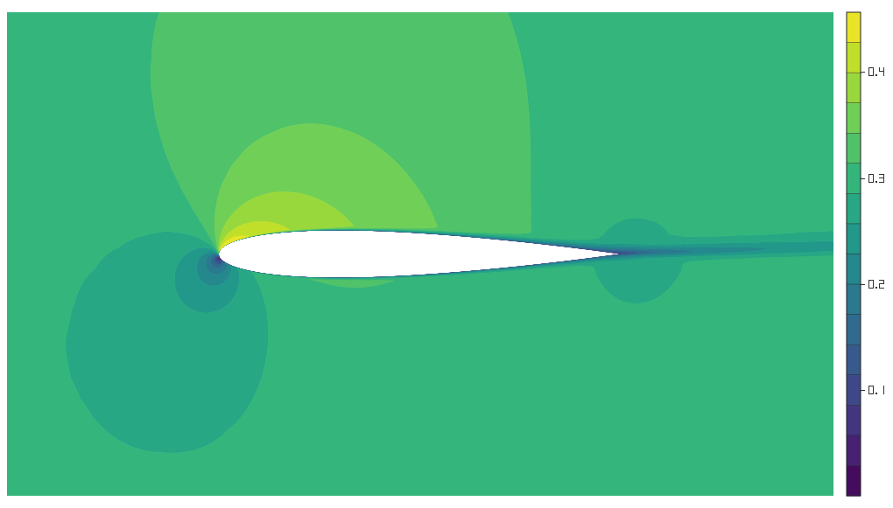

NACA 0012, Mach 0.300, α 4.04°
Aerofoil NACA 0012 after AGARD AR-138, appendix A1, test point Mach 0.300 and incidence 4.04°. The computation is fully turbulent with Spalart-Allmaras at the values given in the fact sheet (wall-corrected according to the report).
Case summary
| Item | Value |
|---|---|
| Inflow Mach number | 0.2990 |
| Reynolds number | 1.86·106 |
| Model | Navier-Stokes, turbulent (Spalart-Allmaras) |
| Mesh | 16,384 cells |
| Time stepping | Newton-Krylov (implicit) |
| Result of the run | converged after 56 steps, relative residual 7.2·10−9 |
What the case shows
Purpose
The case checks the flow around an aerofoil with viscosity and a turbulence model (Spalart-Allmaras, fully turbulent) at Mach 0.2990 against a wind-tunnel measurement. Compared is the pressure distribution on the upper and lower surface, that is, what determines lift and – in transonic flow – the position of the shock.
Theory of the reference
The reference is a measurement, not a computation: the pressure coefficients at the pressure taps of the model from the data collection AGARD AR-138 (R91). The pressure coefficient relates the wall pressure to the dynamic pressure of the free stream,
The computation is evaluated at the positions of the taps, separately for the upper and the lower surface. Used are 35 taps on the upper and 30 on the lower surface. Mach number and incidence of the computation are the values corrected for the influence of the tunnel walls; they are given in the fact sheet.
What the picture should show
The result view shows the Mach number around the aerofoil. In the diagrams decreases upwards, so the suction side is on top. Line (computation) and points (measurement) should lie close together over the smooth sections. The RMS deviation over the taps is 0.0450 on the upper surface (largest deviation 0.0933) and 0.0224 on the lower surface (largest 0.0507).
Limits of the comparison
- The measurement has its own uncertainty: wall influence of the tunnel, position of transition, accuracy of the incidence. The correction of Mach number and incidence is itself an approximation.
- The computation is fully turbulent; in the experiment transition is free or tripped at a fixed position. Drag is therefore not a yardstick of this comparison.
- At a shock the deviation is locally large even if the shock position differs by only a few per cent of the chord; the largest deviation then lies there.
- The tolerances (RMS 0.110 upper, 0.0300 lower) are a guard against regressions on this mesh, not a measure of accuracy.
- Only the wall pressure is compared, not the boundary layer or the wake.
Mesh

Result view

Validation
The reference is the measured pressure distribution c_p on the upper and lower surface of the aerofoil (R91, appendix A1, table 1.4). The diagrams show the computation as a line and the pressure taps as points; the c_p axis is reversed as usual.
Key figures
| Profile | Reference points | RMS deviation | largest deviation | tolerance (RMS) |
|---|---|---|---|---|
| c_p upper surface | 35 | 0.0450 | 0.0933 | 0.110 (met) |
| c_p lower surface | 30 | 0.0224 | 0.0507 | 0.0300 (met) |
Sources
R91.